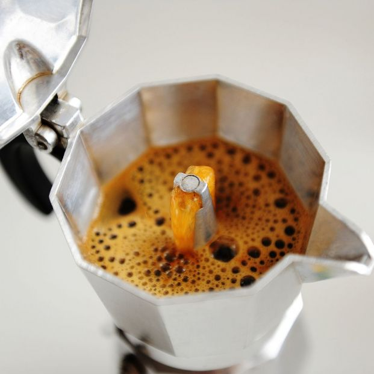

Tipos de cafe
Moka
De invención italiana e inspiración en el movimiento Art Déco de los años cincuenta, su nombre remite al puerto Moka, desde donde en el siglo XVIII salía el café tostado desde Yemen hacia el mundo occidental.
Antes de la introducción del método, el café en el hogar tenía un consumo reducido, pero la cafetera propuso un estilo de café “italiano” emulando al espresso en casa para los consumidores de todo el mundo.
Se fabrican de hierro o acero inoxidable y tienen dos piezas que se giran con un centro fijo. La inferior contiene el agua y la superior almacena el café ya preparado. En el centro está el filtro para el café.
La cafetera se pone sobre una fuente de calor que calienta el agua de la parte inferior hasta crear vapor de agua que aumenta la presión y hace que el agua suba a través del embudo, pasando por el café, extrayéndolo y haciendo llegar finalmente la bebida a la cámara superior, en la que se almacena para ser servida.
Algunas están realizadas en fundición de aluminio. Lo eligen sobre el acero por la excelente conducción térmica que tiene, lo que permite una extracción adecuada del café, sin llegar a quemarlo.


Receta:
- Molienda: media fina
- Dosis: 20gr de café (dos cucharas soperas colmadas)
- Agua: 200gr o 250 ml de agua
- Ratio: 1:10
- Fuente de calor: hornalla a gas o eléctrica
- Tamaño cafetera: para 6 pocillos
Poner 250 ml de agua (o 200gr, según dureza) en la parte inferior de la cafetera.
Colocar 20g de café recién molido en el filtro.
Armar la cafetera italiana sobre la hornalla encendida y esperar de 30 segundos a 1 minuto como máximo.
Mantener la tapa abierta para controlar el momento en que comienza a salir la bebida para evitar que esté demasiado tiempo expuesta a mucha temperatura, ya que puede dar como resultado una bebida sobre extraída y muy amarga.
Cuando comienza a salir la bebida por la parte superior cerrar la tapa, esperar 5 segundos y apagar el fuego.
No hay que dejarlo demasiado tiempo en contacto con el calor de la hornalla, sólo hasta que la bebida ya va subiendo.
Opcional: poner un colchoncito de agua fría en el fondo de la parte superior, ya que la temperatura final del café es bastante elevada en relación con otro métodos de filtrado por goteo.
“Siempre fuego moderado. No presiones el café dentro del embudo. Nunca uses café soluble. No uses la manija para enroscar. Controlá que no quede café en la rosca. Lavá la cafetera luego del uso, sécala bien y guárdala desarmada, te va a durar muchísimos años.”
Espresso
El espresso es el punto de partida de la mayoría de las preparaciones con café: cappuccino, latte, flat white, y muchas más. Por eso es importante aprender a prepararlo con destreza y usando granos de calidad recién molidos. Controlar el tiempo de extracción y la proporción agua-café es fundamental.
Según definiciones del Campeonato Mundial de Baristas (WBC por sus siglas en inglés), un espresso es una bebida de un volumen de entre 25 y 35 ml (incluyendo la crema), preparada con varios gramos de café, dependiendo del café y su molido, a una temperatura de entre 90.5 y 96 grados, con una presión de 8.5 a 9.5 atmósferas y tiempo de extracción de 20 a 30 segundos.
Simple, doble o triple: son preparaciones que varían por su tamaño, comenzando con la preparación básica de espresso que utiliza entre 10 y 12 gramos de café́ en 30 ml. de agua. El espresso doble usa de 14 a 22 gramos y 60 ml, y el triple de 22 a 30 gr en 90 ml. El tiempo de extracción en cada uno es el mismo, ya que lo que varía es el tamaño del portafiltro o la canasta y la cantidad de café.
Americano: es un espresso al que se le agrega agua caliente a tu gusto después de servido. Su tamaño normalmente es de 100 ml y 150 ml. Cada tostador o barista tiene su propia receta, y eso va a depender del equipo que utiliza, la calidad del agua, el tipo de café y sus preferencias personales. Todo eso afecta la extracción y el sabor.
Para una bebida estándar, hay cantidades básicas, pero si querés hacer un espresso con sello propio, podés practicar con las distintas variables sin modificar la técnica.
“Observá la velocidad de la extracción, el color de la crema y el volumen de la bebida. El resultado debe ser una bebida con una crema avellana rojiza, atigrada en la superficie.”
Preparación
- Retirá el portafiltro del grupo de la máquina. Si preparaste un café con anterioridad, desechá la pastilla que quedó y límpialo.
- Seleccioná el portafiltro según la cantidad de bebida a preparar: el sencillo para un espresso o el doble para dos (o un espresso doble).
- Molé y agregá el café al portafiltro, teniendo en cuenta las proporciones de 8 a 12 gramos para un espresso de 30 ml. O 14 a 22 para el portafiltro doble.
- Recordá moler únicamente la cantidad de café que necesitás.
- Dosificá, distribuí, nivelá y apisoná el café en el portafiltro.
- Antes de introducir el portafiltro en el grupo de la máquina de espresso, accioná el botón de preparación por dos o más segundos, hasta que el agua salga limpia y sin desechos de la preparación anterior.
- Insertá el portafiltro en la máquina y oprimí inmediatamente el botón de preparación.
- Ubicá el pocillo o los pocillos, debajo del dispensador. Deben pasar de 4 a 6 segundos entre el momento en que se oprime el botón y el momento en que aparecen las primeras gotas de café en las boquillas. Este tiempo es suficiente para tomar el pocillo o pocillos y ubicarlos debajo del portafiltro.
- Esperá de 20 a 30 segundos y detené el proceso al alcanzar un volumen de 30 ml.
Receta:
- Molienda: fina
- Dosis: 19gr de café (dos cucharas soperas colmadas)
- Porta filtro: simple
- Tiempo de extracción 26 segundos.
- Bebida final de 42 g o 30 ml.
Pasos a seguir
- Colocar 19 g en un portafiltro simple con una molienda fina.
- Realizar el tampeado correctamente.
- Purgar la lluvia.
- Colocar el portafiltro y accionar el botón.
- Entre 26 y 30 segundos después se obtendrá una bebida final de 42 gramos o unos 30 ml.
- Un espresso ideal para disfrutar!

Bebidas con cafe
Ice cappuccino de vainilla
- Método Prensa Francesa
- 120 gr de hielo
- 100 ml de leche fría
- 60 ml café
- 28 ml de almíbar de vainilla
Es una bebida directa sobre vaso refrescado. En una prensa francesa verter la leche y el almíbar de vainilla, emulsionar subiendo y bajando el émbolo hasta doblar el volumen, generando una consistencia cremosa de microburbujas.
Verter la leche en el vaso con hielo enfriado previamente completando 3/4 del vaso; luego, lentamente, completar con café. También se puede usar este método para emulsionar pero con leche caliente.
Moka con leche de almendras
- 85 g de chocolate al 80%, rallado grueso
- 60 ml de agua bien caliente
- 250 ml de leche de almendras sin azúcar que se puede vaporizar para tener una textura cremosa.
- Doble shot de ristretto
- Taza de 300 ml
Para la ganache:
Colocar el chocolate caliente en un bowl y agregar lentamente el agua caliente.
Revolver con batidor hasta que quede cremoso y derretido (esta ganache a base de agua se puede guardar en la heladera hasta por una semana).
Los ingredientes de la ganache rinden para tres bebidas.
Para el moca Colocar tres cucharadas de la ganache en la taza y servir los ristrettos sobre la ganache aprovechando la temperatura del café para integrarlo.
Agregar la leche de almendras vaporizada sin revolver.
Servir inmediatamente y disfrutar.

Bebidas con espresso
a. Espresso, espresso doble y espresso triple: son preparaciones que varían por su tamaño, comenzando con la preparación básica de espresso que utiliza entre 7 y 10 gramos de café por cada 30 ml. El espresso doble usa 14 a 16gr y 60ml y el triple utiliza 21 a 30gr y 90ml respectivamente. El tiempo de extracción en cada uno de estos casos es el mismo, ya que lo que varía es el tamaño de la canasta y la cantidad de café.
b. Espresso corto y espresso largo: algunos consumidores prefieren una bebida de menos de 25 ml y otros de más de 25 ml, y dependiendo de esta situación estas bebidas se pueden llamar espresso corto o largo; es importante saber que el sabor puede cambiar por completo en estos dos extremos.
c. Jarrito, lungo o americano: es un espresso al que se le agrega agua caliente a gusto después de servido. Su tamaño normalmente es de 100 ml y 150 ml. Es importante aclarar lo siguiente: primero se elabora el espresso básico y luego se le agrega agua. Nunca se deja correr más tiempo el agua por el portafiltros para alcanzar la medida del jarrito porque se destruye el sabor del café.
Lo último que pasa por el agua del filtro es la cafeína: a más tiempo de paso de agua por el café, más cafeína y por ende, más amargo será el café.
d. Cappuccino: la base del cappuccino es un espresso al cual se añade leche cremada, espumada (crema suave y consistente), obteniendo como resultado una bebida de 150 a 180 ml de sabor dulce y balanceado en la que se entrelazan las notas dulces del espresso y la leche. La superficie de la bebida debe mostrar muy definidos los colores del café y de la leche, formando el primero un arco dorado alrededor de la taza, con la crema en el centro.

e. Macchiato: es una bebida parecida al cappuccino, pero se sirve en una taza de entre 80 y 100 ml. Después de preparado el espresso, se agrega leche espumada para cappuccino, ocupando los 60 ml restantes de la taza.
f. Café latte: es una bebida parecida al cappuccino, pero suele servirse en una taza mayor. Se diferencia por la forma de vaporizar la leche, pues al calentarla se produce menos crema, y al cremar, la lanceta se introduce desde el primer instante a tres cuartos de la jarra, lo que permite que se produzca menos crema y se caliente la leche. En el cappuccino, la leche vaporizada tiene una mayor cantidad de crema que la leche vaporizada del latte. En este último la densidad de la crema es ligera: hay más leche y menos crema.
g. Flat white: el cappuccino y el latte suelen prepararse con un shot de espresso, mientras que el flat white tradicionalmente se sirve con dos, lo que lo vuelve más concentrado. Su taza es más pequeña que la del latte. Se prepara en una taza de unos 150 ml con dos shots de espresso y una capa fina de leche ligeramente emulsionada (la crema) y el resultado es una bebida sedosa con un intenso sabor a café. La verdadera diferencia con el cappuccino, que puede tener dos shot y que utiliza el mismo tamaño de taza, es el punto de cremado de la leche. Sólo se usa la microespuma (es más líquida). El flat white fue creado para gente que quería un café cremoso sin tanta espuma sobre su taza.
Proporciones generales orientativas segun tipo de cafe